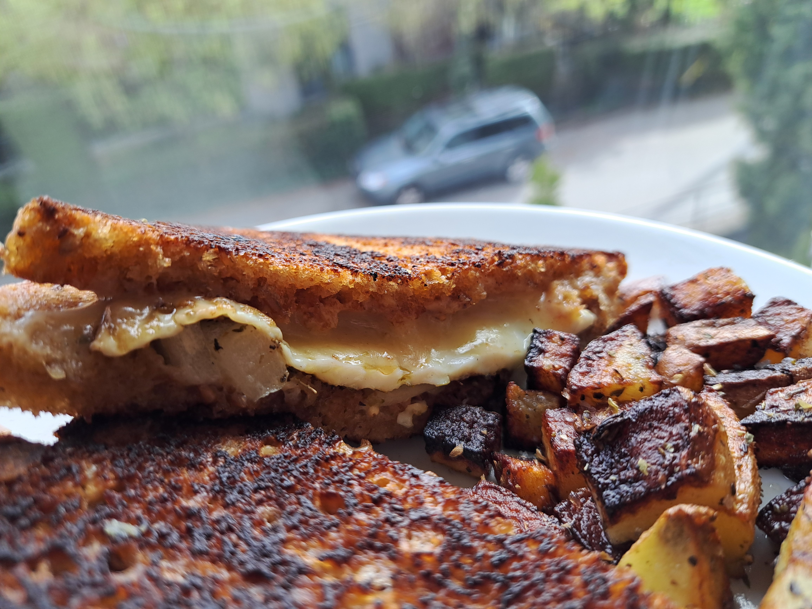
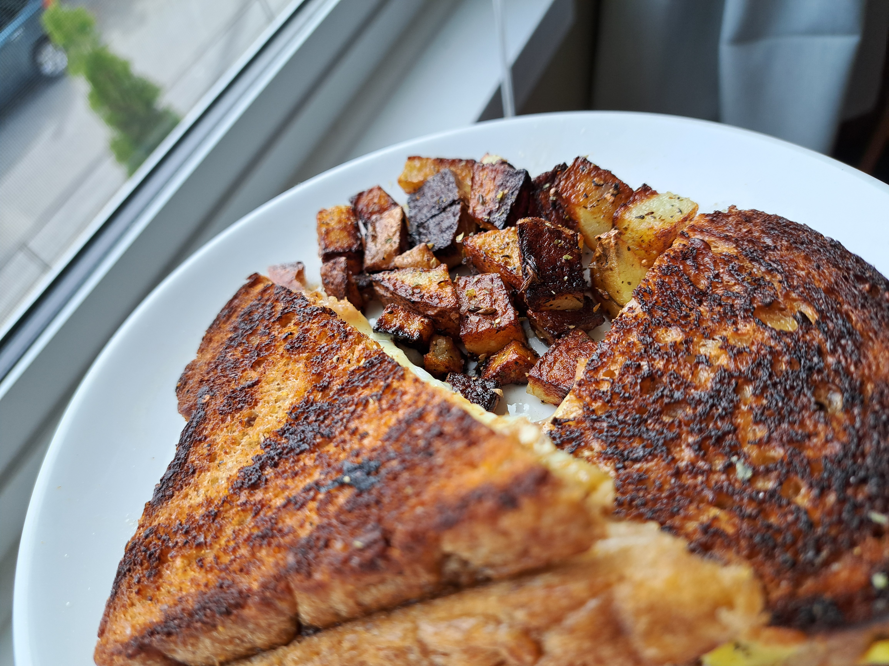
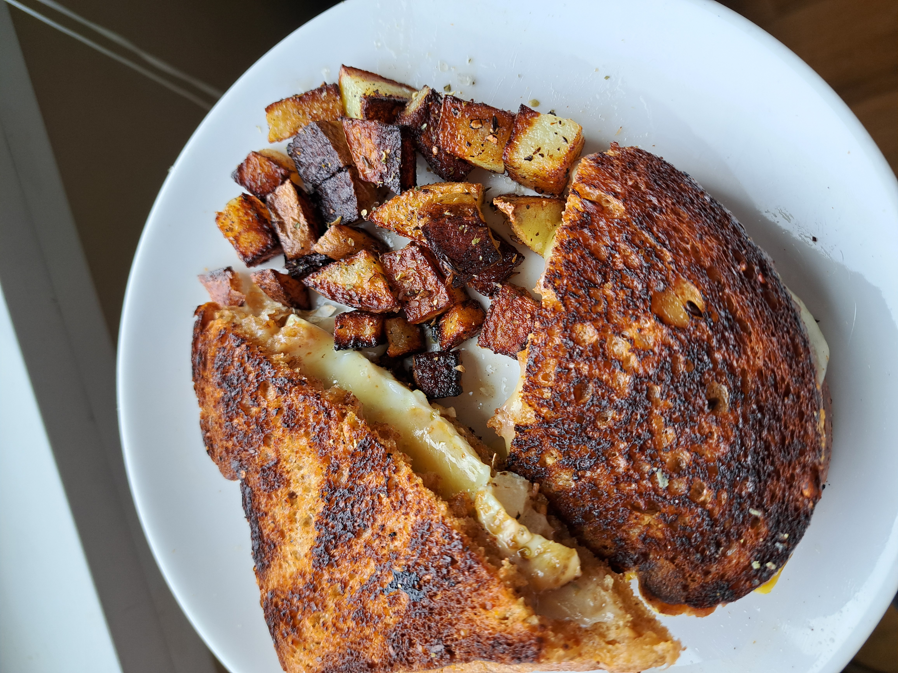
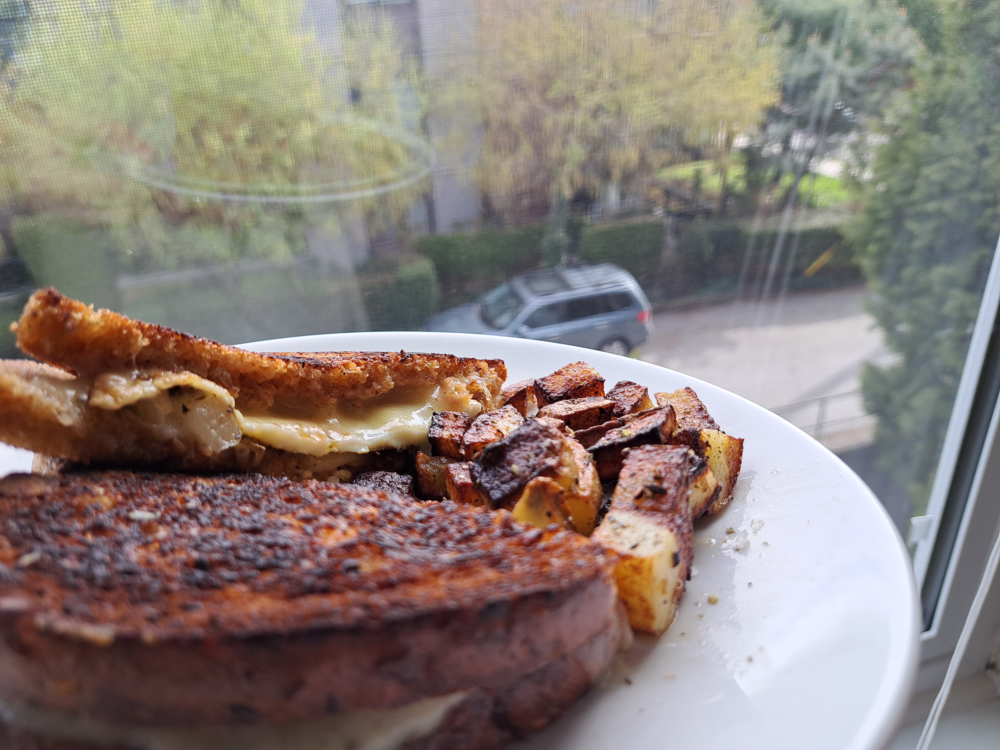

In this recipe, I will be making a "grilled cheese", with a side of pan fried potatoes. This is not my favourite food, but it's my favourite that I can make relatively quick and tastes good.

The first thing you do is prepare your pans. In this case I'll be using 2 pans, 1 large pan to cook the sandwich, and another smaller one where I will be making the things on the side. I put olive oil on both pans, and put down the 2 slices of bread and set the heat to medium. Once I have that, on the side I'll prepare the egg. We will be cooking the egg in the fashion of a Sunny-Side-Up egg. Crack the egg, put it on the smaller pan, and set it to medium heat. Whilst the 2 slices of bread are still cooking, put salt, cumin, and oregona on the egg (still in the pan, just so that none of it will fall off when it is in the grilled cheese). Let the egg cook into it has a crispy bottom, and shrunk a little, then take it off the heat to the side. Next, add margrine to the bread, about 1 little dollup for each piece. Once the bread has turned golden brown, we will set them both on a plate, and cut the Yellow Potatoe roughly in half, and start making little cubes, and put it off to the side. Now, grab an onion, and cut it into two halves and little pieces to put in the sandwich. Now, put mayonnaise on both of the toasted side of the pieces of bread, and then slice enough cheese to cover a piece of bread, and then put your egg on top of the cheese, and throw your onions on there too. Now first the second phase. Put some more olive oil on both pans, and throw your potatoes in the small pan on medium heat still, put some kosher salt, cumin, and oregona, now let those cook. While that's happening, put your sandwich thing on the big pan again, with 1 dollup per side, and let it sit on medium heat until nice a crispy golden brown. Now, with the potatoes, throw salt, cumin, and oregona on the potatoes when they are almost finished cooking. Let them sit until again, as always golden brown. Now assemble everything together. Grab a plate, cut your sandwich in half, and put your potatoes on the plate too, and plate it however you want. Now enjoy!


